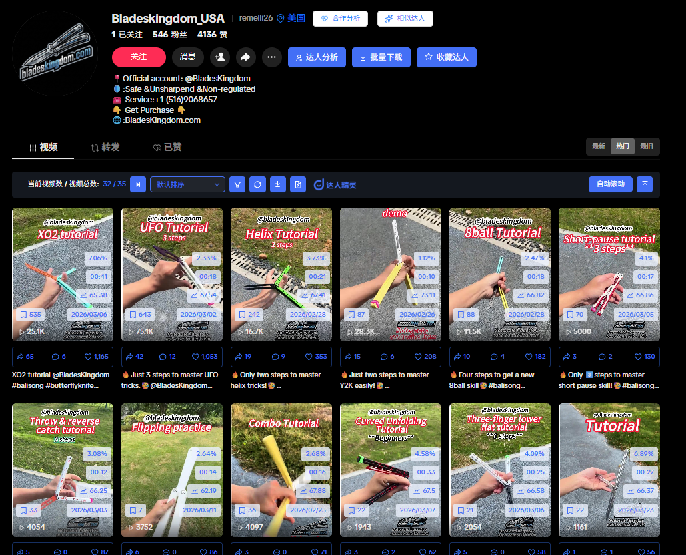

操盘手简介
“我不只是在剪辑视频，我是在批量生产能撬动美金的流量引擎。”
拥有近2年深耕TikTok生态的实战操盘经验。我不仅是一个懂视听语言的编导，更是一个极度依赖数据和A/B测试的商业化推手。
从0到1搭建品牌内容体系、制定跨区（美/欧/俄）差异化打法、精准沉淀高转化素材库——我的核心目标永远只有一个：用最低的试错成本，把网感和创意，转化为账面上的GMV与爆款利润。
核心战绩与主导项目
主导项目 01 · 品牌独立站引流
蝴蝶刀 (Bladeskingdom) 全链路运营
- 负责双矩阵账号的站外引流与品牌推广，针对性制作高转化内容，成功构建流量至独立站的成交漏斗。
- 独立从0搭建品牌内容体系。精准拆解用户画像，制定阶梯式内容策略：覆盖新手、中高阶炫技及泛兴趣人群，击穿多国受众偏好，实现新链接极速冷启动。
- 业绩战报：产出 100W+ 爆款2条；打造20W-90W中小爆款矩阵 120+条。至26年4月测试期累计GMV破 $50,000+美金。



主导项目 02 · 垂类爆款孵化
宠物清洁毛刷与手套
- 内容策划：深度切入养宠家庭“掉毛痛点”，主导从痛点洞察、选题策划到分镜设计的全流程。
- 素材资产化：严守控制变量法，通过高频 A/B 测试筛选高转化画面与文案，沉淀品牌专属素材库。
- 业绩战报：2个月实现自营矩阵A/B链接冷启动，月均稳定产出 GMV $10,000+；赋能建联达人输出 150W+超级爆款1条，直接撬动 $1.3W+ 美金收益。


主导项目 03 · 达人资源盘活
大马士革口袋刀【代运营】
- 精准拓源并深耕刀具垂类达人私域库，全权负责内容共创与脚本审阅，对原生视频进行品牌化重构。
- 业绩战报：指导10余个店铺达人成功实现批量化爆款复刻，单项目斩获 3000+ 订单。


高能原片作品集 (去重与隐私保护版)
硬核技能栈
商业流量洞察
通过第三方数据平台深挖TikTok算法底层逻辑，精准捕捉趋势BGM与热点模因。
A/B 测试与素材裂变
熟练运用变量控制法解构爆款基因，实现优质视觉与文案资产的模块化复用与裂变。
全链路视听制作
擅长控制前3秒黄金Hook率及完播率节奏，独立把控高质量成片交付。
跨文化达人建联
基于对海外受众心理的理解，无障碍完成海外垂类KOL/KOC的沟通、议价及脚本指导。
职业履历
2025.11 - 2026.05
益维顺跨境有限公司
核心业务部 · TK短视频编导与运营
教育背景
2019.07 - 2023.07
南京师范大学泰州学院
法学本科 (具备严密的逻辑思维与规则解读能力)